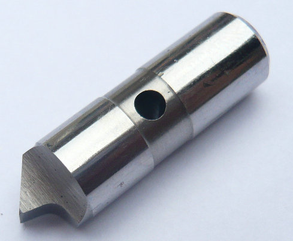
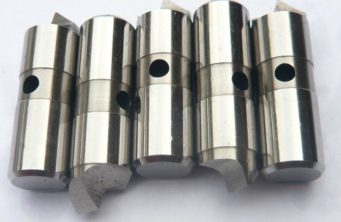

Der Stirnseitenmitnehmer verwendet vier unabhängige Mitnehmerbolzen, um das Drehmoment zu übertragen.


Unsere Ingenieure haben jahrelang Erfahrung mit Stirnseitenmitnehmern aller gängigen Systeme. Wir wissen, worauf es bei der Passung, dem Rundlauf und der Kraftübertragung ankommt. Unsere Mitnehmerstifte laufen bereits tausendfach in Drehmaschinen und Rundschleifmaschinen – von kleinen Präzisionsteilen bis zu schweren Wellen.
Fordern Sie ein Angebot für Ihre kundenspezifischen Mitnehmerstifte an. Senden Sie uns einfach eine Zeichnung, ein Muster oder eine Skizze. Wir unterbreiten Ihnen schnell eine technisch und wirtschaftlich optimierte Lösung.


Neben der Serienfertigung fertigen wir auch Einzelstücke und Kleinserien für Instandsetzungen. Wenn ein originaler Mitnehmerstift verschlissen ist, liefern wir Ihnen schnell und preiswert ein Ersatzteil in gleicher oder verbesserter Qualität. Wir kennen die gängigsten Face-Driver-Marken und können passende Mitnehmerstifte nach Muster fertigen
In der spanenden Fertigung mit Stirnseitenmitnehmern (Face Driven) sind die Mitnehmerstifte diejenigen Komponenten, die direkt das Drehmoment auf das Werkstück übertragen. Sie arbeiten unter extremen Wechselbelastungen, müssen verschleißfest sein und gleichzeitig höchste Bruchsicherheit bieten. Wir sind ein spezialisierter Hersteller aus China und fertigen Mitnehmerstifte in bester Qualität – von der Einzelanfertigung bis zur OEM-Serie.
| Antriebsstifte (Menge) | Flächenantrieb (Durchmesser) | Zentrum (Durchmesser) | Schlüsselstifte | Zentrierstifte | Antriebsstifte (Durchmesser) | ||||||
|---|---|---|---|---|---|---|---|---|---|---|---|
| 3 | 160 | 5 | 3 | 22 | 6 | ||||||
| 3 | 160 | 3 | 3 | 22 | 8 | ||||||
| 3 | 160 | 6 | 3 | 6 | 6 | ||||||
| 3 | 160 | 8 | 3 | 8 | 8 | ||||||
| 6 | 160 | 14 | 3 | 14 | 10 | ||||||
| 6 | 160 | 18 | 3 | 18 | 10 | ||||||
| 6 | 160 | 14 | 3 | 14 | 15 | ||||||
| 6 | 160 | 24 | 3 | 24 | 15 | ||||||
| 6 | 160 | 28 | 3 | 28 | 15 | ||||||
| 6 | 160 | 35 | 3 | 35 | 20 | ||||||
| 6 | 220 | 35 | 3 | 35 | 20 | ||||||
| 6 | 250 | 35 | 3 | 35 | 20 | ||||||
| 6 | 290 | 48 | 6 | 50 | 20 | ||||||
| 6 | 348 | 48 | 6 | 50 | 20 | ||||||
| 6 | 440 | 76 | 6 | 80 | 30 | ||||||
| 6 | 490 | 76 | 6 | 80 | 30 | ||||||
- Startseite
- Produkte
- Kontakt
- Exzentrische Mitnehmerbolzen
- halb versetzte Antriebsstifte
- Zentrische Mitnahmebolzen
- Standard-Mitnehmermesser
- abgefachte Mitnahmebolzen
- Rechtslauf Antriebszapfen
- Linkslauf-Mitnehmerstifte
- Mitnehmerbolzen mit voller Mitnahmebreite
- langlebige Mitnehmerbolzen
- Mitnehmerbolzen mit Meißelkante
- schwimmende Mitnehmer
- Kraftbetätigte Mitnehmerbolzen
- hydraulische Anschlussstifte
- mechanische Anschlussstifte
- bewegliche Mitnehmerbolzen
- feste Anschlussstifte
- Hartmetall Mitnahmebolzen
- Werkzeugstahl S7 Bolzen
- Wechselbare Mitnehmerbolzen
- Mitnehmerstift